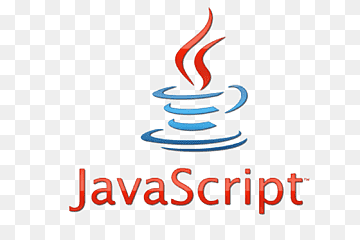

Перед Бренданом Эйхом, нанятым в
компанию Netscape 4 апреля 1995 года была поставлена задача внедрить язык программирования Scheme или что-то похожее в браузер Netscape.
Поскольку требования были размыты, Эйха перевели в группу, ответственную за серверные продукты, где он проработал месяц, занимаясь улучшением протокола HTTP.
В мае разработчик был переброшен обратно, в команду, занимающуюся клиентской частью (браузером), где он немедленно начал разрабатывать концепцию нового языка программирования.
Менеджмент разработки браузера, включая Тома Пакина, Михаэля Тоя, Рика Шелла, был убеждён, что Netscape должен поддерживать язык программирования,
встраиваемый в HTML-код страницы.
Помимо Брендана Эйха, в разработке участвовали сооснователь Netscape Communications Марк Андрессен и сооснователь Sun Microsystems Билл Джой:
чтобы успеть закончить работы над языком к релизу браузера, компании заключили соглашение о сотрудничестве в разработке.
Они ставили перед собой цель обеспечить «язык для склеивания» составляющих частей веб-ресурса: изображений, плагинов, Java-апплетов,
который был бы удобен для веб-дизайнеров и программистов, не обладающих высокой квалификацией.
Первоначально язык назывался Mocha, затем он был переименован в LiveScript и
предназначался как для программирования на стороне клиента, так и для программирования на стороне сервера (там он должен был называться LiveWire).
4 декабря 1995 года LiveScript переименовали в JavaScript, получив соответствующую лицензию у Sun.
В 1996 году компания Microsoft выпустила аналог языка JavaScript, названный JScript. Анонсирован этот язык был 18 июля 1996 года. Первым браузером, поддерживающим эту реализацию, был Internet Explorer 3.0.
JavaScript — это кросс-платформенный, объектно-ориентированный скриптовый язык, который добавляет интерактивность и отзывчивость к вашим
веб-страницам.

JavaScript позволяет разработчику веб-сайта управлять тем, как ведет себя веб-страница. Это делает JavaScript принципиально отличным от HTML
языка который отвечает за структуру веб-документа, и CSS, языка, который формирует внешний вид веб-страниц.
Программы, написанные на языке JavaScript, называются скриптами. В браузере они подключаются непосредственно к HTML-документу и,
как только загружается страница – тут же выполняются. Процесс выполнения скрипта называют «интерпретацией».
Если PHP скрипт обрабатывается на стороне сервера с помощью PHP интерпретатора, то JavaScript выполняется в браузере пользователя JavaScript
интерпретатором.
Сегодня каждый браузер поддерживает JavaScript, тем самым делая его языком веба.
В браузере JavaScript может делать всё, что относится к манипуляции с HTML-документом, взаимодействию с посетителем и, с некоторыми ограничениями, с сервером:
JavaScгipt – невероятно мощный и эффективный язык, который непременно нужно попробовать в деле!
Структурно JavaScript можно представить в виде объединения трёх чётко различимых друг от друга частей:
Приложения, написанные на JavaScript, могут исполняться на серверах, использующих Java 6 и более поздних версий. Это обстоятельство используется для построения серверных приложений, позволяющих обрабатывать JavaScript на стороне сервера. Помимо Java 6, существует ряд платформ, использующих существующие движки (интерпретаторы) JavaScript для исполнения серверных приложений. (Как правило, речь идёт о повторном использовании движков, ранее созданных для исполнения кода JavaScript в браузерах WWW.)
| Название | Используемый движок JavaScript | Языки, на которых написан движок и платформа | Лицензия |
| Jaxer | SpiderMonkey | C++, C | GPL 3 |
| persevere-framework | Rhino | Java | Модифицированная лицензия BSD |
| Helma | Rhino | Java, JavaScript | BSD-подобная Helma License 2.0 |
| v8cgi | V8 | C++, JavaScript | Лицензия BSD |
| node.js | V8 | C++ | Лицензия MIT |
| gopherjs | Go | Go | Лицензия BSD |
Подключение сценариев к html-документу
Сценарии JavaScript бывают встроенные, т.е. их содержимое является частью документа, и внешние, хранящиеся в отдельном файле с расширением .js.
Сценарии можно внедрить в html-документ в виде гиперссылки.
Для этого нужно разместить код в отдельном файле и включить ссылку на файл в заголовок
<head> <script>src="script.js"></script> </head>
или тело страницы.
<body> <scriptsrc="script.js"></script> </body>
Этот способ обычно применяется для сценариев большого размера или сценариев, многократно используемых на разных веб-страницах.
Список использованных тегов
Список использованных свойств CSS